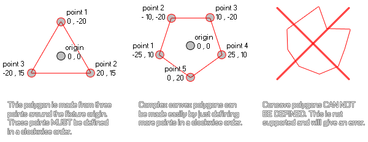

physics_fixture_add_point(fixture, xpos, ypos)
| Argument | La description |
|---|---|
| fixture | l'index de l'appareil |
| xpos | la position x du point (par rapport à l'origine du luminaire pour les formes polygonales) |
| ypos | la position y du point (par rapport à l'origine du luminaire pour les formes polygonales) |
Retours: N / A
Cette fonction définit les points d'un polygone précédemment défini sur l'appareil en utilisant soit physics_fixture_set_polygon_shape ou il peut être utilisé pour ajouter des points à une chaîne d'appareils de bord en utilisant la fonction physics_fixture_set_chain_shape. Pour une forme de polygone, les points sont relatifs à l'origine de l'appareil, la position 0,0 de l'axe x / y étant le centre, et les coordonnées suivantes étant calculées comme d'habitude dans GameMaker Studio 2 avec down / right étant + x, + y et haut / gauche étant -x, -y. Voici une illustration pour vous aider à visualiser ce processus:

Comme vous pouvez le voir, n'importe quel polygone convexe simple peut être modélisé de cette manière, mais les polygones concaves ne sont pas supportés pour le moment. Enfin, pour fermer le polygone, vous devez lier le fixture à une instance. Vous devez également noter que vous devez également avoir au moins trois points définis pour votre polygone avant de le lier à une instance ou vous obtiendrez une erreur et qu'ajouter un point à un appareil qui n'a pas de forme de polygone définie précédemment entraînera également une erreur. Erreur. Notez également que le nombre maximum de points permis pour un appareil est de huit.
Pour les formes de chaînes (qui sont simplement des formes de bord connectées en série), cette fonction définit un point comme une "connexion" pour chaîner les bords à. Par conséquent, vous devez avoir défini au moins deux points avant de lier le projecteur à l'instance sinon vous obtiendrez une erreur. Cependant, contrairement aux polygones, vous n'êtes pas limité à un maximum de huit points et vous pouvez en ajouter autant que nécessaire pour créer la chaîne et les points sont définis dans les coordonnées réelles de la pièce plutôt que par rapport à l'instance.
physics_fixture_set_polygon_shape(fix_Ship);
physics_fixture_add_point(fix_Ship, 0,0);
physics_fixture_add_point(fix_Ship, -40, 100);
physics_fixture_add_point(fix_Ship, 40, 100);
Le code ci-dessus appliquera une forme de polygone à l'appareil indexé dans la variable "fix_Ship", puis définira trois points pour créer une forme triangulaire.